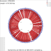
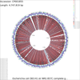
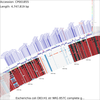
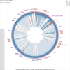
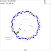
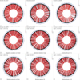
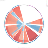

Overview
Description
The CGView Comparison Tool was developed by Paul Stothard (stothard@ualberta.ca), Jason Grant (jason.grant@ualberta.ca), and Adriano Arantes (arantes@ualberta.ca).
The CGView Comparison Tool (CCT) is a package for visually comparing bacterial, plasmid, chloroplast, or mitochondrial sequences of interest to existing genomes or sequence collections. The comparisons are conducted using BLAST, and the BLAST results are presented in the form of graphical maps that can also show sequence features, gene and protein names, COG category assignments, and sequence composition characteristics. CCT can generate maps in a variety of sizes, including 400 Megapixel maps suitable for posters. Comparisons can be conducted within a particular species or genus, or all available genomes can be used. The entire map creation process, from downloading sequences to redrawing zoomed maps, can be completed easily using scripts included with the CCT. User-defined features or analysis results can be included on maps, and maps can be extensively customized.
Instructions for installing and configuring CCT are provided here.
Gallery
- <br />Details can be found in <a href='tutorials.html#tutorial-2'>Tutorial 2</a>." />
- <br />Details can be found in <a href='tutorials.html#tutorial-2'>Tutorial 2</a>." />
- <br />Details can be found in <a href='tutorials.html#tutorial-2'>Tutorial 2</a>." />
- <br />Details can be found in <a href='tutorials.html#tutorial-4'>Tutorial 4</a>." />
- <br />Details can be found in <a href='tutorials.html#tutorial-7'>Tutorial 7</a>." />
- <br /><a href='tutorials.html#tutorial-5'>Tutorial 5</a> describes how to make a montage of maps." />
- <br />Details can be found in <a href='tutorials.html#tutorial-6'>Tutorial 6</a>." />
{kind=link}
{kind=link}
{kind=link}
{kind=link}
{kind=link}
{kind=link}
{kind=link}
Citation
Grant JR, Arantes AS, Stothard P (2012) Comparing thousands of circular genomes using the CGView Comparison Tool. BMC Genomics 13:202.
Questions or Suggestions?
Email Paul Stothard at stothard@ualberta.ca.